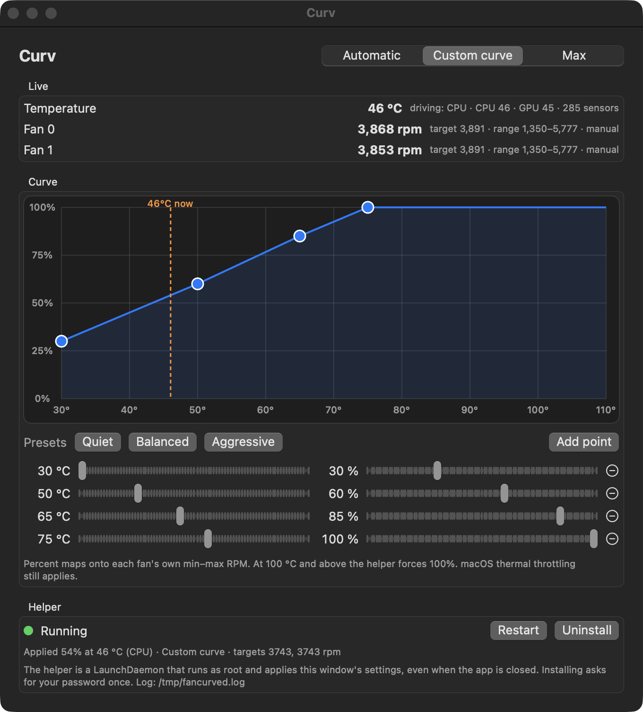
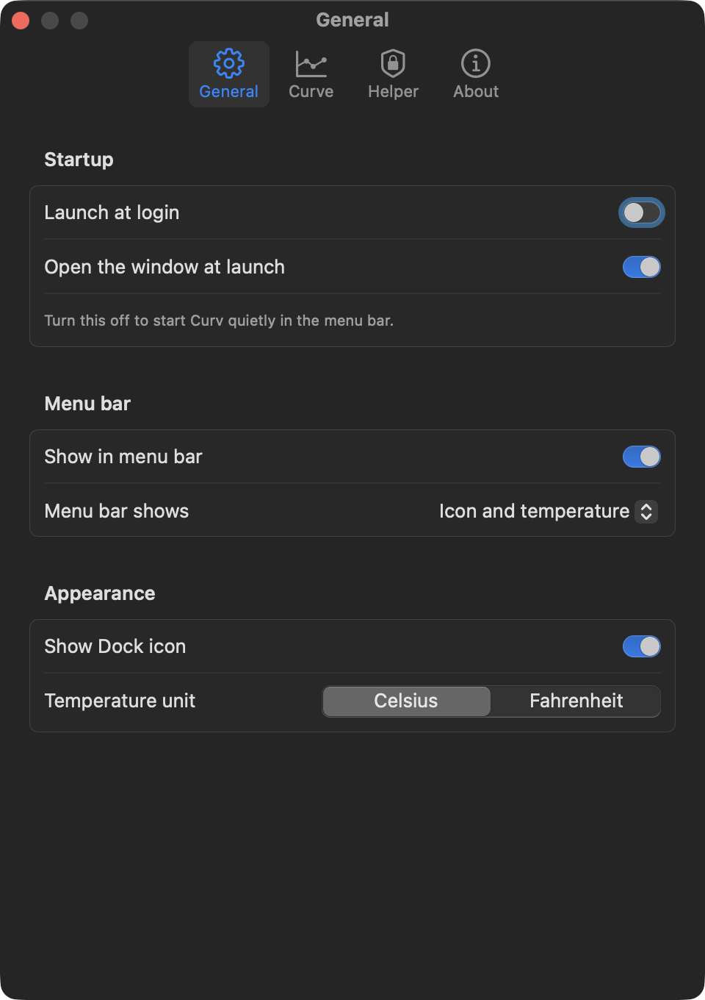

Your fans, your curve.
Draw the line between temperature and fan speed. A small root helper holds the fans on it, even after you close the window.

How it works
Two processes, one file between them
Reading the SMC needs no privileges. Writing a fan target does. Curv splits along that line so the window never runs as root.
Curv.app your user
Reads fan RPM and every SMC temperature key once a second and draws them. Every edit to the curve is saved to a JSON file in your Library folder.
- Three modes: Automatic, Custom curve, Max
- Drag points, double-click to add, sliders for exact values
- Quiet, Balanced and Aggressive presets
- Menu bar item with the live temperature or fan speed, and a menu that switches mode without the window
- Settings for launch at login, menu bar and Dock visibility, °C or °F, sensor, safety floor and interval
fancurved root
A LaunchDaemon. Every two seconds it reads that JSON file, averages the CPU-die and GPU sensors, takes the hotter one, interpolates the curve, and writes each fan's target through the SMC.
- Starts at boot, restarts if it dies
- Hands the fans back to macOS when it stops
- Installed, updated and removed from the app, one password prompt each
The curve
Percent of each fan's own range
Drag the points. The curve is linear between them and flat past the ends. A fan with a range of 1350 to 5777 rpm at 60 percent runs at 4006 rpm; a different fan with a different range lands somewhere else.
Drag a point. Double-click empty space to add one. Right-click a point to remove it.
Settings
The rest of a Mac app
Launch at login. Start quietly in the menu bar or with the window. Show or hide the Dock icon. Pick the sensor, move the safety floor, change how often the helper re-applies. Check for updates against the latest release.

Limits
What it deliberately does not do
Never disables thermal protection
Curv sets fan targets and nothing else. Frequency scaling, throttling and emergency shutdown stay with macOS at all times.
Never trusts a single sensor
Individual core keys on Apple Silicon spike far above the package temperature. The curve is driven by the CPU-die average or the GPU average, whichever is hotter.
Never runs the window as root
Only the helper has privileges, and it does one thing: read a file, write fan targets. Uninstall removes it completely.
Never leaves the fans stranded
When the helper stops, is uninstalled, loses its sensor, or the mode is Automatic, it restores automatic control before it goes.
No telemetry, no network
Nothing leaves the machine. The only files it writes are the config, a log, and a heartbeat in /tmp.
Apple Silicon only
It uses the float SMC fan keys that Apple Silicon exposes. Intel Macs encode fans differently and are not supported.
Caution
A quiet curve lets the machine run hotter than macOS would choose. At 100 °C and above the helper forces 100 percent regardless of the curve, and macOS keeps throttling as it always does. Even so, a fan curve is a decision you are making for the hardware. Start from Balanced.
Install
Download, clear quarantine, install the helper
Requires macOS 15 or newer on Apple Silicon. The build is signed ad hoc and not notarised by Apple, so macOS quarantines it on download.
Start here
Download the app
- Download Curv-<version>.zip from Releases, unzip it, and move Curv.app to Applications.
- Clear the quarantine flag once.
- Open Curv and click Install… in the Helper box. macOS asks for your password once.
xattr -dr com.apple.quarantine /Applications/Curv.appFrom source
Build it yourself
Needs Xcode or the Command Line Tools. The script builds both binaries and assembles the bundle.
git clone https://github.com/romankhadka/curv.git
cd curv
./build.sh
open build/Curv.appWhat gets installed
Four files, all removable
- /Library/PrivilegedHelperTools/com.romn.fancurved
- the daemon
- /Library/LaunchDaemons/com.romn.fancurved.plist
- starts it at boot and keeps it alive
- /tmp/fancurved.log
- daemon log
- /tmp/fancurved.status.json
- heartbeat the app reads
Uninstall in the Helper box stops the daemon, removes the first two, and returns the fans to macOS.